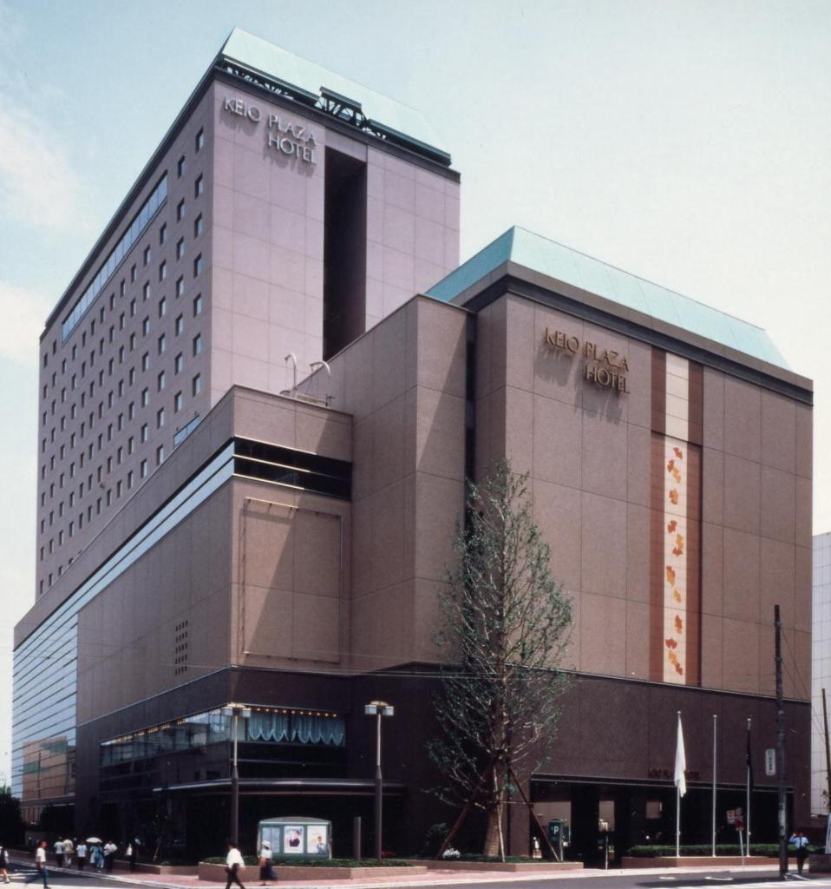
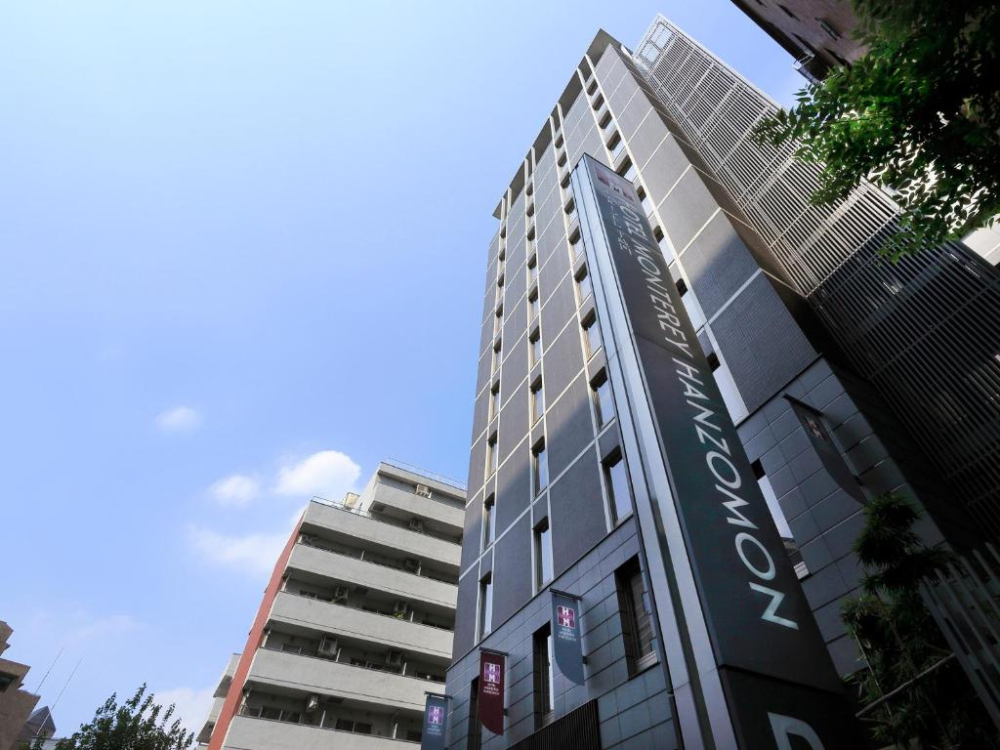
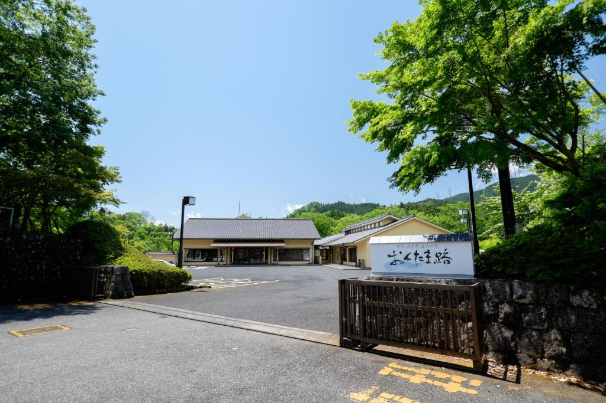

Keio Plaza

Keio Plaza Hotel Hachioji is a 4 star hotel in Hachioji. The city center is 6.4 km away.
Monterey Hanzomon

Not far from the center of Tokyo, at the address Chiyoda-ku Ichiban-cho 23-1, is the Hotel Monterey Hanzomon, a 4-star hotel. The hotel belongs to the hotel tetora group.
Read more
3 comments
Login or register to post comments
Okutamaji

Okutamaji is a 4-star ryokan in Omeh. The city center is 2.3 km away.
Read more
2 comments
Login or register to post comments
Read more
2 comments
Login or register to post comments